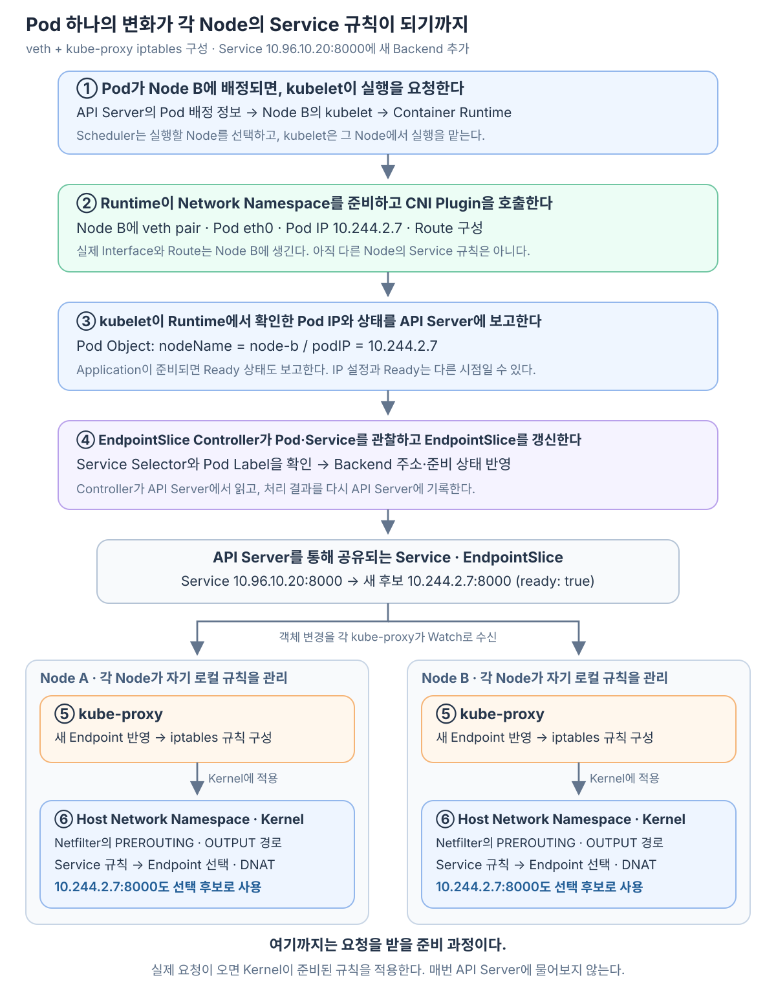
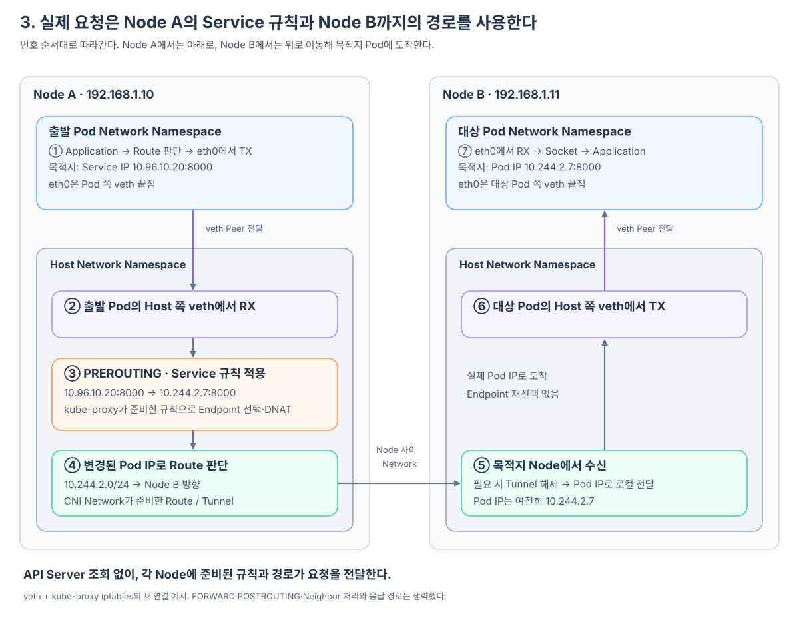
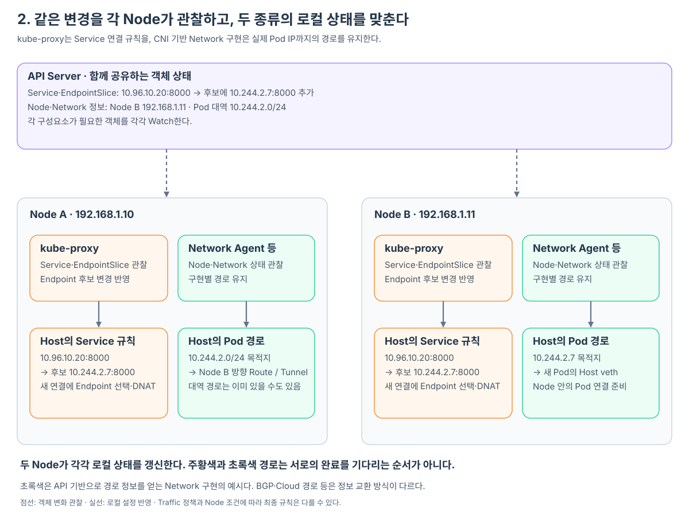

Node B에 새 model-server Pod가 생기면, 다른 Node에서도 Service를 통해 그 Pod에 요청을 보낼 수 있게 된다. Node B 안에서 만든 Pod의 Network 설정이 어떻게 다른 Node의 Host Netfilter 규칙에까지 반영되는 걸까?
이 글에서는 그 변화 하나를 끝까지 따라간다. Pod 생성 요청을 받은 kubelet이 Runtime을 통해 Network 구성을 시작하고, CNI가 만든 Pod IP가 kubelet을 통해 API Server에 보고된다. 이를 관찰한 Controller가 Service의 Endpoint 정보를 바꾸면, 각 Node의 kube-proxy가 그 변경을 받아 자기 Host의 iptables 규칙에 반영한다. 이후 도착한 요청은 Kernel이 갱신된 규칙을 적용해 새 Pod로 전달한다.
예시에서는 이미 model-server Service가 10.96.10.20:8000을 제공하고 있고, 여기에 새 Backend Pod가 추가된다. Linux의 veth 기반 Network와 kube-proxy의 iptables 구성을 기준으로, Service의 Selector가 새 Pod의 Label과 일치한다고 가정한다.

Pod를 실행하려면 먼저 그 Pod의 Network를 만들어야 한다
사용자나 Deployment Controller가 Pod Object를 만들면 Scheduler가 실행할 Node를 고른다. 이 예시에서는 Node B에 배정됐고, Node B의 kubelet이 API Server를 관찰하다 자신에게 배정된 Pod를 확인한다.
kubelet은 이제 그 Pod를 실제로 실행해야 한다. CRI를 통해 Container Runtime에 Pod Sandbox 생성을 요청한다. Runtime은 Pod의 Container들이 공유할 Network Namespace를 준비하고, Network 통합 계층을 통해 설정된 CNI Plugin을 호출한다.
이때 kubelet이 직접 만드는 것과 Runtime·CNI에 맡기는 것, 그리고 API Server에 실제로 보고되는 상태를 먼저 구분하고 싶다면 kubelet은 Pod 실행을 어떻게 Runtime과 CNI에 맡기고 상태를 보고할까?에서 이 구간만 자세히 볼 수 있다.
호출받은 veth 기반 CNI Plugin은 필요한 주소 관리 기능 등과 협력해 veth pair를 만든다. 한쪽 끝점은 Pod Namespace에 두고 이름을 eth0으로 설정하며, 반대쪽은 Host Network에 연결한다. Pod IP와 필요한 Route도 설정한다. 새 Pod의 IP가 10.244.2.7로 정해졌다고 하자.
이제 Node B 안에는 10.244.2.7을 가진 Pod Interface와 Host 쪽 연결이 생겼다. Pod의 Application은 Container가 실행된 뒤 이 Network를 사용할 수 있다. 다만 이 시점의 설정은 Node B에서 만들어진 결과다. 다른 Node가 이 Pod를 Service의 Backend로 사용하려면, 먼저 이 결과가 Kubernetes의 공유 상태에 반영돼야 한다.
CNI가 설정한 Pod IP를 kubelet이 API Server에 보고한다
Runtime은 CNI의 구성 결과를 바탕으로 Pod Sandbox의 Network 상태를 관리하고, kubelet에 그 상태를 제공한다. kubelet은 확인한 IP를 Pod 상태에 넣어 API Server에 보고한다.
이 과정에서 전달되는 것은 “이 Pod의 IP가 10.244.2.7이다”라는 정보다. Host에서 만든 veth 장치나 Routing Table 자체가 API Server로 이동하는 것은 아니다. 실제 Interface와 Route는 Node에 남아 있고, 다른 구성요소가 알아야 할 Pod 상태가 객체에 기록된다.
Node B에서 만든 실제 설정
Pod eth0의 IP: 10.244.2.7
↓ Runtime이 kubelet에 Network 상태 제공
kubelet이 API Server에 Pod 상태 보고
↓
Pod Object
spec.nodeName: node-b
status.podIP: 10.244.2.7
Application이 준비되고 Readiness 조건을 만족하면 kubelet은 그 상태도 보고한다. 그러면 API Server를 통해 보는 Pod Object에는 IP뿐 아니라 Ready: true라는 정보도 나타난다. IP 설정과 준비 완료는 서로 다른 시점일 수 있다.
이제 새 Pod의 주소와 상태가 Cluster의 다른 구성요소에도 보인다. 다음으로 이 변화를 읽는 주체는 Service의 Backend 정보를 관리하는 EndpointSlice Controller다.
Pod 상태를 지켜보던 Controller가 Service의 EndpointSlice를 갱신한다
EndpointSlice Controller는 API Server를 통해 Service와 Pod의 변화를 관찰한다. 새 Pod의 Label이 model-server Service의 Selector와 일치한다면, 그 Pod의 주소와 준비 상태를 해당 Service의 EndpointSlice에 반영한다.
Controller가 읽은 정보
Service: model-server
Service IP: 10.96.10.20:8000
Selector와 일치하는 Pod: 10.244.2.7
Pod 준비 상태: Ready
↓ Controller가 EndpointSlice 작성·갱신
API Server에 반영된 EndpointSlice
model-server의 Endpoint: 10.244.2.7:8000
nodeName: node-b
ready: true
처음에는 “Pod 하나의 IP가 생겼다”라는 상태였지만, 이 단계를 거치면서 “이 Service가 사용할 Backend 주소가 추가됐다”라는 상태가 된다. Controller는 API Server와 별도의 구성요소이며, API Server에서 입력을 읽고 처리 결과를 다시 API Server에 기록한다.
EndpointSlice에는 준비되지 않은 Endpoint도 조건과 함께 기록될 수 있다. 여기서는 준비가 완료된 Pod가 일반적인 새 Service 연결의 후보가 되는 경우를 따라간다. 종료 중인 Endpoint와 publishNotReadyAddresses 같은 설정의 차이는 뒤에서 다룬다.
이 변경을 기다리고 있던 구성요소가 각 Node의 kube-proxy다.
각 Node의 kube-proxy가 EndpointSlice 변경을 받아 로컬 상태를 바꾼다
Node A와 Node B에는 각각 kube-proxy가 동작하고 있다. 이들은 API Server에서 Service·EndpointSlice 상태를 읽고, Watch 연결을 유지하면서 이후 변경도 전달받는다.
앞 단계에서 EndpointSlice가 바뀌면 두 Node의 kube-proxy 모두 그 변화를 관찰할 수 있다. Node A의 kube-proxy는 자신이 관리하던 Backend 후보에 10.244.2.7:8000을 반영한다. Node B의 kube-proxy도 자기 Node에서 같은 종류의 작업을 한다.
여기서 API Server가 전달하는 것은 Kubernetes 객체의 변경이다. kube-proxy는 이를 읽어 “내 Node의 Service 규칙에 새 Endpoint를 반영해야 한다”고 판단한다. 아직 kube-proxy 내부의 관찰 상태만 바뀌었다면 실제 Packet 처리에는 충분하지 않다. 마지막으로 그 내용을 Host Kernel이 사용할 규칙으로 만들어야 한다.
kube-proxy가 Service의 가상 접근점과 EndpointSlice의 Backend 상태를 결합해 Node마다 사용할 후보를 계산하고 로컬 Data Plane을 유지하는 역할은 kube-proxy는 Service와 EndpointSlice를 어떻게 Node의 Service Data Plane으로 바꿀까?에서 자세히 살펴본다.
kube-proxy가 그 변경을 Host의 iptables 규칙에 반영한다
iptables Mode의 kube-proxy는 Service와 EndpointSlice 상태를 바탕으로 규칙을 만들고 Kernel에 적용한다. 이 규칙은 자기 Node의 Host Network Namespace에 속한 Netfilter 처리 경로에서 사용된다.
예시에서는 10.96.10.20:8000으로 향하는 Packet이 Service 규칙에 들어오고, Endpoint 후보 중 하나를 선택한 뒤 선택된 주소로 DNAT하도록 구성된다. 새 Endpoint가 생겼으므로 10.244.2.7:8000도 이 선택 경로에 포함된다.
Service가 등록된 뒤 KUBE-SERVICES, Service Chain과 Endpoint별 DNAT Chain이 실제로 어떤 관계로 만들어지는지는 Service가 등록되면 kube-proxy는 DNAT Chain을 어떻게 만들까?에서 자세히 살펴본다.
Host Netfilter에서 사용할 iptables 규칙의 의미
목적지가 Service 10.96.10.20:8000인가?
→ 이 Service의 Endpoint 후보 중 하나 선택
→ 10.244.2.7:8000을 선택했다면 그 주소로 DNAT
이를 통해 Node B에서 시작된 변화가 Node A의 Packet 처리 규칙에까지 도착한다.
Node B에서 CNI가 Pod Network 구성
→ kubelet이 Pod IP·상태를 API Server에 보고
→ EndpointSlice Controller가 이를 관찰하고 EndpointSlice 갱신
→ Node A의 kube-proxy가 EndpointSlice 변경을 관찰
→ Node A Host의 iptables Service 규칙 갱신
→ Node A의 Netfilter 경로에서 새 규칙을 사용할 수 있음
Pod에서 Host 쪽 veth로 들어온 Service Packet은 PREROUTING 경로에서 이 규칙을 만날 수 있다. Node 자체의 Process가 생성한 Service Packet은 OUTPUT 경로에서 만날 수 있고, 필요한 Masquerade 같은 출발지 주소 변환은 POSTROUTING 경로와 연결된다.
즉 kube-proxy가 갱신하는 것은 Netfilter 자체의 코드가 아니라 그 처리 지점에 연결된 Service 규칙이다. kube-proxy가 Service 규칙을 관리하는 동안, CNI나 관리자가 다른 방화벽·정책 규칙을 관리할 수도 있다.
이제 요청이 도착하면 Kernel이 갱신된 규칙을 사용한다
Node A의 Pod가 10.96.10.20:8000으로 새 연결을 시작한다. Pod의 Route 판단이 출력 Interface인 eth0을 선택하고, Pod 쪽 veth 끝점에서 보낸 Packet은 Node A의 Host 쪽 Peer에서 수신된다.
Host의 Netfilter 처리 경로에서 조금 전 갱신된 Service 규칙이 적용된다. 이 연결의 Endpoint로 10.244.2.7:8000이 선택되면 목적지가 해당 주소로 바뀐다. 실제 Endpoint 선택은 이때 Kernel이 수행하며, kube-proxy는 그 선택에 사용할 규칙을 앞서 준비한 것이다.
그다음 Kernel은 변경된 Pod IP까지의 경로를 사용한다. CNI 기반 Network가 준비한 Route나 Tunnel을 따라 Node B로 이동하고, Node B의 로컬 경로를 거쳐 대상 Pod의 Host 쪽 veth에서 송신된다. Peer인 대상 Pod의 eth0에서 수신되면 Network Stack이 Socket을 통해 Application에 데이터를 전달한다.

Pod 생성부터 Host 규칙 반영까지는 앞으로 들어올 요청을 준비하는 과정이고, 지금은 그 결과를 실제 Packet에 사용하는 과정이다. 요청마다 API Server에 Endpoint를 묻거나 kube-proxy Process를 거쳐 재전송할 필요가 없다. 목적지 Node에는 이미 실제 Pod IP로 도착하므로 같은 Service의 Endpoint를 다시 고르는 단계도 필요하지 않다.
그림은 요청 방향만 표시했다. 응답은 반대 방향의 경로와 Connection Tracking에 따른 역방향 NAT 처리를 통해 돌아온다.
이 흐름과 함께 CNI Network는 실제 목적지까지 갈 경로를 유지한다
지금까지 따라간 것은 Pod의 변화가 Service 규칙이 되는 과정이다. 규칙이 목적지를 10.244.2.7로 바꾼 뒤 그 주소에 도달하려면 Network 경로도 준비돼 있어야 한다.
예를 들어 Node A가 192.168.1.10, Node B가 192.168.1.11이고 Node B의 Pod 대역이 10.244.2.0/24라면, Node A에는 그 대역으로 가는 Route나 Tunnel이 필요하다. Node B에는 10.244.2.7을 실제 Pod의 Host 쪽 veth로 연결하는 로컬 경로가 필요하다.
Pod 생성 때 Runtime이 호출하는 CNI Plugin은 Pod의 Network 연결을 준비한다. Cluster 경로를 계속 유지하는 일에는 해당 Network 구현의 상주 Agent나 Controller도 참여할 수 있다. 이 Agent는 Node·Pod·Network 전용 리소스 등을 관찰하거나 BGP·Cloud Network를 통해 경로 정보를 얻어 필요한 설정을 반영한다.

따라서 상태를 Watch하는 모든 구성요소가 최종적으로 iptables만 갱신하는 것은 아니다. kube-proxy는 이 예시에서 Host의 Netfilter Service 규칙을 갱신하고, Network 구현은 Interface·Route·Tunnel·eBPF Program 등 자신이 담당하는 설정을 유지한다. 두 갱신은 서로 독립적으로 진행되며 kube-proxy가 Network Agent에 명령하는 순서는 아니다.
Node B의 Pod 대역 경로가 이미 있으면 Pod 하나가 추가돼도 Node A의 대역 Route는 그대로일 수 있다. 이때 바뀌는 것은 Service의 Endpoint 후보와 Node B 안의 새 Pod 연결이다. Overlay에서는 실제 Pod Packet을 Node 간 전달용 Packet 안에 넣을 수 있으므로, 내부의 Pod 목적지 IP와 바깥쪽 Node 주소도 구분한다. 이 예시의 Service IP·Pod IP·Node IP는 서로 다른 역할을 가진다.
CNI 설정 자체를 다시 보고 싶다면 CNI는 Pod의 veth·IP·Route와 Node 간 경로를 어떻게 준비할까?에서 이어서 볼 수 있다.
Pod가 바뀌면 새 연결이 사용할 상태를 다시 맞춘다
Pod B가 교체되어 새 IP가 10.244.2.9가 되면 Network 연결 준비, Pod 상태 보고, EndpointSlice 갱신과 각 Node의 규칙 동기화가 다시 일어난다. kube-proxy는 10.244.2.7을 계속 후보로 쓰지 않도록 Service 전달 상태를 조정한다. Network 구현은 없어지는 Pod의 연결을 정리하고 새 Pod의 IP로 도달할 경로를 준비한다.
이처럼 원하는 객체 상태에 맞게 로컬 상태를 조정하는 것을 Reconcile이라고 한다. 여러 변경을 모아 처리할 수 있고 설정에 따라 재동기화도 수행하므로, 매 Packet마다 규칙 전체를 다시 쓰는 동작은 아니다. Watch가 끊겼다가 재연결되는 경우에도 다시 읽은 현재 상태에 맞춰 로컬 상태를 복구할 수 있다.
새 연결은 갱신된 Endpoint 후보를 사용한다. 기존 연결은 Connection Tracking에 저장된 NAT 상태를 계속 사용할 수 있으므로 규칙 변경만으로 모든 연결이 새 Pod로 옮겨지지는 않는다. 기존 Pod가 사라지면 그 연결은 실패할 수도 있다.
EndpointSlice 변경과 각 Node의 규칙 적용, Network 경로 갱신은 동시에 완료되지 않을 수 있다. Node A만 오래된 Service 규칙을 갖고 있거나, Service 규칙은 맞지만 Node B로 가는 경로가 어긋날 수 있다. 따라서 장애를 볼 때에는 “실제 Endpoint가 올바른가?”와 “그 Endpoint까지 도달할 길이 있는가?”를 구분해서 확인한다.
Single Node에서도 이 역할들은 필요하다
Node가 하나여도 일반 Pod에는 전용 Network Namespace와 Interface·IP·Route가 필요하다. CNI 기반 구성이 이를 준비하고, Service를 사용하면 kube-proxy 또는 대체 구현이 Service 전달 규칙을 유지한다. 로컬 Kubernetes에서 직접 CNI를 설치하지 않았더라도 배포 도구가 기본 Network를 함께 준비했을 수 있다.
| 구성 | Pod Network가 준비하는 것 | Service 구현이 준비하는 것 |
|---|---|---|
| Single Node | Pod Interface·IP·Route와 Node 내부 전달 경로 | Service 주소를 로컬 Endpoint로 연결하는 규칙 |
| Multi Node | Node 내부 경로와 Node 사이 Route·Tunnel 등 | Service 주소를 정책에 맞는 로컬·원격 Endpoint로 연결하는 규칙 |
hostNetwork: true인 Pod는 Host Network Namespace를 공유하므로 일반 Pod의 전용 Network 연결과 다르다. 이 글의 veth 예시는 전용 Pod Network를 사용하는 경우다.
Node 정보도 공유되지만 모든 정보의 작성자가 kubelet인 것은 아니다
각 Node의 kubelet은 Pod 상태와 별개로 Node 주소·Ready 같은 Node 상태도 보고한다. Cloud 환경에서는 일부 Node 정보 관리에 Cloud Controller가 참여할 수 있다. 실행 중인 Pod의 상태는 각각의 Pod Object에 반영된다.
Node의 Pod 대역은 kubelet이 임의 배정하는 값과 구분해야 한다. Node.spec.podCIDR를 사용하는 구성에서는 보통 Control Plane의 Node IPAM Controller가 배정하고, 다른 IPAM 방식의 CNI는 자체 리소스로 주소 대역을 관리할 수 있다. API Server는 여러 주체가 만든 객체를 읽고 쓰고 관찰하는 창구이며, 저장은 뒤의 etcd가 담당한다.
규칙에 반영되는 후보와 시점은 정책에 따라 달라질 수 있다
본문은 Selector가 있는 Service에서 준비가 끝난 Pod를 새 연결의 후보로 사용하는 기본적인 예시다. EndpointSlice에는 준비되지 않은 Endpoint도 조건과 함께 표현되며, 종료 중인 Endpoint와 publishNotReadyAddresses 같은 설정은 다른 처리 조건을 가진다.
또한 모든 Node의 kube-proxy가 공통 객체를 관찰하더라도 Local Traffic 정책이나 Node별 조건이 반영되므로, 최종 규칙이 항상 동일한 것은 아니다. Node A의 Pod에서 시작한 요청은 Node A의 로컬 Service 규칙을 사용하고, Node B의 NodePort에 들어온 요청은 Node B의 로컬 규칙을 사용한다. 각 Node에 kube-proxy가 필요한 이유가 여기에 있다.
Minikube에서는 공통 상태와 Node 로컬 상태를 나란히 확인한다
API Server에 반영된 상태는 다음 명령으로 볼 수 있다. Service와 Namespace 이름은 실제 환경의 값으로 바꾼다.
kubectl get nodes -o wide
kubectl get pods -A -o wide
kubectl -n <namespace> get service <service-name> -o yaml
kubectl -n <namespace> get endpointslices -l kubernetes.io/service-name=<service-name> -o yaml
kubectl -n kube-system get daemonset kube-proxy
kubectl -n kube-system get pods -o wide
Pod IP와 실행 Node를 먼저 보고, 그 주소가 Service의 EndpointSlice에 어떤 상태로 표현되는지 비교한다. kube-system의 Pod 목록에서는 kube-proxy와 설치된 Network 구현도 확인할 수 있다. 일부 환경에서는 Network 구성요소가 다른 Namespace나 Host 서비스로 실행될 수 있다.
Single Node Minikube의 Node 안에는 다음과 같이 들어갈 수 있다.
minikube ssh
Multi Node라면 조사할 Node를 지정한다.
minikube ssh --node <node-name>
Node 안에서 사용하는 방식에 맞춰 상태를 읽는다. 다음은 iptables 구성의 관찰 예시다.
sudo iptables-save -t nat
ip route
ip link
Service 주소와 Endpoint 주소가 들어간 NAT 규칙은 kube-proxy가 준비한 연결 관계를 보여 준다. Route와 Interface는 Pod IP로 가는 경로의 단서를 보여 준다. 복잡한 Routing 정책이나 eBPF 구성을 쓰는 경우 이 출력만으로 전체 경로가 드러나지는 않는다.
Minikube가 VM이나 Container Driver를 사용하면 이 상태는 macOS Host가 아니라 해당 Linux Node에 있다. Pod 변경 전후로 Kubernetes 객체와 Node의 규칙·경로를 비교하면 상태 보고와 로컬 동기화를 함께 관찰할 수 있다.
같은 역할을 다른 구현이 맡을 수도 있다
본문은 kube-proxy의 iptables 방식을 기준으로 설명했다. nftables 방식은 Netfilter에 연결된 nftables Ruleset을 구성하며, 다른 Proxy Mode는 해당 Kernel 전달 구조를 사용한다. kube-proxy는 보통 각 Node에서 실행되지만 배포 형태와 적용 Node 범위는 Cluster 설정에 따라 달라질 수 있다.
Cilium 같은 구현은 eBPF로 Service 처리를 제공해 kube-proxy를 대체할 수도 있다. 이때 하나의 Network 제품이 Pod Network와 Service 전달을 함께 구현할 수 있으며, Endpoint 선택이 Socket 계층처럼 더 이른 지점에서 이루어질 수도 있다. 실제 환경을 관찰할 때에는 설치된 CNI와 Service 구현부터 확인해야 한다.